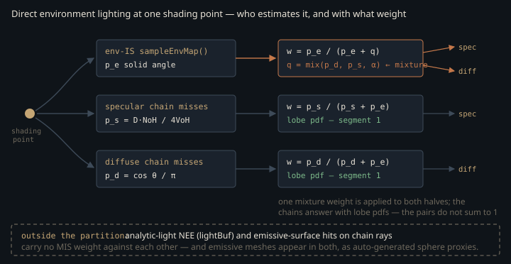

Monograph · Tree · ← Module hub · MIS heuristics
sampling
MIS heuristics
Balance and power in mis.glsl.
Two ways to find the sky
From a shading point the path tracer can reach the environment map two ways: sample the env map's luminance CDF and shadow-trace toward the chosen texel, or sample the BSDF, let the bounce ray escape, and take what the miss shader returns. Both are unbiased estimators of the same integral, and each fails where the other works. Env sampling wastes nearly every sample on a smooth surface, where almost no env direction has meaningful BSDF response; BSDF sampling wastes nearly every sample under a small bright sun, which almost no BSDF direction hits. Running both and adding counts the environment twice.
Multiple importance sampling is the correction — scale each sample by how likely the *other* strategy was to have produced that same direction. This unit is the two-function header that computes that scale, and the larger question of which estimator pairs OHAO applies it to.
One heuristic ships, one does not
Here $p_A$ and $p_B$ are the two strategies' probability densities *evaluated at the same direction* $\omega$, both in solid-angle measure — Veach and Guibas' balance heuristic. Its whole guarantee is the second equation: because the weights sum to one at every direction, the combined estimator stays unbiased no matter how badly the two densities disagree.
return pdfA / max(pdfA + pdfB, 1e-6);shaders/includes/rt/mis.glsl:8The `max(..., 1e-6)` guards in a useful direction. Both densities are non-negative, so the ratio is already bounded above by 1 and clamping the *denominator* from below can only push the weight down. Where both collapse — a direction neither strategy would plausibly have generated — the weight decays toward zero rather than producing a NaN: a divide-by-zero traded for bounded energy loss, never a firefly.
The power heuristic ($\beta = 2$), which squares both densities before the ratio, is present in the file and has zero callers anywhere in `shaders/` or `ohao/`:
float misPowerHeuristic(float pdfA, float pdfB) {shaders/includes/rt/mis.glsl:12This one really is unused, not a formula inlined elsewhere under another name: every MIS weight in every raygen profile goes through `misBalanceHeuristic`.
Veach's result is that the balance heuristic's variance exceeds that of *any* other weighting function by at most a small additive term, so the ceiling on what $\beta = 2$ can buy is low — and the squaring costs extra multiplies per bounce, per chain, per sample. The file's own comment concedes the trade ("slightly better in practice but more expensive"). Leaving it in costs nothing at runtime: with no call site the SPIR-V compiler eliminates it, and `strings` over the three built raygen modules finds `misBalanceHeuristic` as an `OpName` in all of them and `misPowerHeuristic` in none. Names survive in those binaries, so the absence is elimination, not stripping — dead source, not dead compiled code.
The partition covers the environment and nothing else
`PathTracer` carries a default raygen in its shader-set struct and nothing binds it. The class is only ever instantiated as `RTProfileRendererBase::m_pathTracer`, and that base's `init()` overwrites the default as its very first statement:
m_pathTracer.setShaderSet(m_shaderSet);ohao/render/rt/rt_profile_renderer.hpp:99The two profiles `VulkanRenderer` can construct supply the only two raygens the engine ever loads: `pt_raygen_realtime.rgen` for `RenderMode::RTRealtime`, and for offline renders
"bin/shaders/rt_pt_raygen_offline.rgen.spv",ohao/render/rt/rt_profile_renderer.hpp:220so `pt_raygen.rgen` is compiled by the build and bound by no shipping path. Everything below reads `pt_raygen_offline.rgen`.
That shader calls `misBalanceHeuristic` five times, and every call has an env-map density on one side — three for env-importance-sampled shadow rays, two for chain rays that escape to the sky. There is no MIS weight anywhere else in it. `pt_raygen_realtime.rgen` calls it six times; the sixth has a different shape and is taken up at the end of this page.
Analytic lights are therefore outside the partition. The bounce-0 NEE block picks one light uniformly, samples its surface, shadow-traces, and scales the result by a geometric area-to-solid-angle factor and a `lightCount` compensation for the pick:
vec3 directContribution = Le * (diff * nlDiff + spec * NdotL) * weight * float(lightBuf.lightCount);shaders/rt/pt_raygen_offline.rgen:481The only other thing applied to that sum — and to the split diffuse/specular halves derived from it — is the firefly clamp, live whenever the clamp flag and `pc.tuning.x` are both set:
if (lumD > pc.tuning.x) neeDiffuse *= pc.tuning.x / lumD;shaders/rt/pt_raygen_offline.rgen:496A variance hack, not an MIS term. For genuine point and directional lights the absence is correct: a delta light cannot be hit by a BSDF sample, so there is no second estimator to weight against. But the RT light buffer holds more than delta lights — emissive meshes become sphere-light proxies on upload:
// Auto-generate lights from emissive materialsohao/gpu/vulkan/light_upload.cpp:183and those meshes still emit when a chain ray lands on them, because the closest-hit shader writes their emissive texture into `payload.color` and the raygen adds it to the chain throughput unweighted. An emissive mesh is thus reachable by two uncoordinated estimators. The proxy is a coarse fit — mesh centre, radius `0.3 ×` bounding-box diagonal, an intensity heuristic over bright texels — so the overlap is not a clean factor of two, just unmanaged. MIS is exactly the tool that would manage it, and it is not wired to that pair.
Every MIS weight in OHAO has the environment map on one side. "NEE versus BSDF" as a general mechanism does not exist here; env-IS versus BSDF-escape does.
Both sides must be quoted in solid angle
A ratio of densities means nothing unless both are in the same measure. The env sampler draws from a 2D CDF built over equirectangular pixels — a density in UV space — and converts to solid angle by dividing out the Jacobian of the mapping:
$p_{uv}$ is the luminance-proportional density over the normalised $(u,v)$ square, $\theta$ the polar angle, and $2\pi \cdot \pi \cdot \sin\theta$ the area stretch at that latitude — which is why the poles, where $\sin\theta \to 0$, need the `1e-4` floor the code applies before dividing:
pdf = pdfUV / (OHAO_TWOPI * OHAO_PI * sinT);shaders/includes/rt/env_sampling.glsl:136The BSDF side needs the env density at a direction the env sampler never chose, so the miss shader inverts the equirect mapping and reports it through the payload:
payload.envPdf = pdfEnvMap(dir, pc.control.w, uint(pc.tuning.y));shaders/rt/pt_miss.rmiss:78That is the ordering constraint here: `payload.envPdf` is produced by the miss shader and consumed by the raygen only after `traceRayEXT` returns. A miss shader that forgets to set it, or sets it in UV measure while `sampleEnvMap` returns solid angle, does not crash — it produces a smooth, plausible brightness error that survives any number of samples.
The delta escape hatch
The balance heuristic assumes both strategies have finite densities. A mirror lobe does not: its density is a Dirac delta, against which any finite $p_e$ should win zero weight. The specular chain detects that case by roughness, parks `specLastBsdfPdf` at 1.0, and flags the bounce:
if (roughness < 0.05) {shaders/rt/pt_raygen_offline.rgen:599The flag is read in exactly one place in the file — where that chain escapes to the sky, to skip the weight entirely:
if (payload.envPdf > 0.0 && pc.control.w > 0u && !specLastBounceWasDelta) {shaders/rt/pt_raygen_offline.rgen:628so a mirror reflection of a bright sky feature arrives at full strength. The counterfactual is not a halving: with the parked pdf of 1.0, dropping the skip would weight that ray by $1/(1 + p_e)$, and for the sharp sun texel the sentence is about $p_e$ is large — the reflection would be all but extinguished.
That `0.05` is a threshold, not a measurement, and it moves only one side of the pair: the bounce-0 env-IS weight never consults the flag. Widening the band therefore forces the BSDF side to 1 over directions where the env-IS side still discounts itself by a factor below one, the two sum above one, and the band it swallows is double-counted, not lost. `pt_raygen_realtime.rgen` cuts elsewhere — its `0.05` test sits inside an `#ifdef OHAO_CRUDE_GLOSSY` A/B branch that nothing in the repository defines, and the live path splits at
if (roughness < 0.02) {shaders/rt/pt_raygen_realtime.rgen:775with a VNDF sampler and an exact VNDF density behind it.
Where the partition does not close

The raygen is dual-ray: from every primary hit it deterministically traces both a specular and a diffuse chain. Only the diffuse one carries a true $f\cos\theta/p$ — cosine sampling collapses the ratio to the albedo:
diffThroughput = albedo;shaders/rt/pt_raygen_offline.rgen:914The specular one carries a constant tint, under a comment that already calls itself simplified:
specThroughput = mix(vec3(1.0), albedo, metallic);shaders/rt/pt_raygen_offline.rgen:597That expression is not $f\cos\theta/p$ for any GGX lobe. The shader that does implement the real ratio is the realtime one, from a VNDF-sampled half-vector whose weight collapses to Fresnel times the Smith $G_2/G_1$:
specThroughput = F * smithG2overG1GGX(NdotV, NdotL, alpha);shaders/rt/pt_raygen_realtime.rgen:806On the first segment nothing is chosen stochastically, so each offline chain reports a single-lobe density with no selection factor, and both say so:
specLastBsdfPdf = pdf_spec; // pure GGX PDF (no lobe-mix factor in dual-ray)shaders/rt/pt_raygen_offline.rgen:608// MIS PDF for env-miss weighting: pure cosine-hemisphere PDF (no lobe-mix factor).shaders/rt/pt_raygen_offline.rgen:915Both comments are scoped to that first segment, and the code stops being deterministic right after it. From bounce 1 on, each chain draws `bsdfChoice` and picks a lobe, and the density it reports from then on carries exactly the selection factor the comments deny:
specLastBsdfPdf = specProb * pdf_spec;shaders/rt/pt_raygen_offline.rgen:879with a mirrored $(1-\text{specProb})\cos\theta/\pi$ on the diffuse branch, and the same pair again inside the diffuse chain. The clean partition below is a statement about the primary hit only.
The env-IS side does not follow suit even there. It builds a Fresnel-derived lobe-selection probability $\alpha$ and blends the two lobe densities into one mixture $q$:
float specProbMIS = max(fresnel.r, max(fresnel.g, fresnel.b)) * (1.0 - roughness * 0.9);shaders/rt/pt_raygen_offline.rgen:541then applies the single weight $w = p_e / (p_e + q)$ to *both* the diffuse and specular halves of its own contribution. A mixture density is the right object when one lobe is picked at random; under a deterministic dual-ray split the correct partitions are per-lobe — $\{p_e, p_d\}$ for the diffuse half, $\{p_e, p_s\}$ for the specular half. Substituting $q$ for each:
with equality only at $\alpha = 0$, and symmetrically the specular pair closes only at $\alpha = 1$. Because $q$ lies between $p_d$ and $p_s$, a surface with $p_s > p_d$ underweights env light into its diffuse channel and overweights it into its specular channel.
The endpoints are the common cases and they come out right. A metal has $\alpha$ forced to 1 by the `mix(specProbMIS, 1.0, metallic)` on the next line, and no diffuse lobe to lose. A dielectric gets $\alpha = \max(F)\,(1 - 0.9\,\text{roughness})$, whose second factor is 0.1 at roughness 1 while $\max(F)$ is the Schlick term at the incident cosine — starting at the $F_0 = 0.04$ the shader assigns dielectrics and climbing toward 1 at grazing. A fully rough dielectric therefore sees $\alpha$ between 0.004 and 0.1: small either way, so $q \approx p_d$ and the diffuse pair closes. The defect lives in between, on glossy dielectrics where both lobes carry energy and their densities differ by orders of magnitude. The claim here is the algebra; the visible magnitude has not been measured. It matters more than it looks, because those two halves are also the demodulated AOVs the realtime denoisers consume separately.
The mixture is near-universal but not universal. Every env-IS block in `pt_raygen_offline.rgen` builds it — the two inside the chains as well as the one at the primary hit — and so do the realtime raygen's three. The one env-IS block in the tree that does not is the realtime ReSTIR-GI initial candidate, which weights an env sample taken at the secondary vertex against a bare cosine density and no mixture at all:
float w = misBalanceHeuristic(envPdf, pdfDiffuseMIS);shaders/rt/pt_raygen_realtime.rgen:1535Contracts
- Both densities must be in solid-angle measure. A producer returning UV density rebalances the weights instead of failing.
- Argument order encodes which strategy is weighted: `misBalanceHeuristic(pdfA, pdfB)` returns the weight for **A**. Call sites pass `(envPdf, bsdfPdf)` on env-IS rays and `(bsdfPdf, payload.envPdf)` on escaped chain rays; swapping either inverts the partition, and the symptom is a brightness shift, not a crash.
- `payload.envPdf` is written by the miss shader, so a BSDF-side env hit is weightable only after `traceRayEXT` returns. A new miss shader must set or zero it, or the raygen reads a stale value.
- A near-delta specular bounce must set `specLastBounceWasDelta`; otherwise its finite stand-in density enters the ratio and mirror reflections of bright sky lose energy.
- An area-light MIS pair would need a way to look up the light density of the primitive a BSDF ray hit. No such map exists, which is why analytic lights sit outside the partition.
Source files
shaders/includes/rt/mis.glslohao/render/rt/rt_profile_renderer.hppshaders/rt/pt_raygen_offline.rgenohao/gpu/vulkan/light_upload.cppshaders/includes/rt/env_sampling.glslshaders/rt/pt_miss.rmissshaders/rt/pt_raygen_realtime.rgenParent hub for the full pipeline narrative; this page is the file-level design unit. Sitemap · hover glossary terms anywhere.